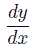

学校の昼の休みに
赤門前の友の下宿の二階にねころんで、風のない小春日の温かさを
貪るのがあの頃の自分には一つの日課のようになっていた。従ってこの下宿の帳場に坐っていつもいつも同じように長い
煙管をふすべている主婦ともガラス障子越しの
御馴染になって、友の居ると居ないにかかわらず自由に階段を上るのを許されていた。
ここな二階から見ると
真砂町の何とか館の廊下を膳をはこぶ下女が見える。下は狭い平庭で柿が一本。猫がよくこれを伝うて隣の屋根に上るのである。庭へは時々近辺の子供が鬼ごっこをしながら乱入して来ては
飯焚の婆さんに叱られている。多く小さい男の子であるが、中にいつも十五、六の、赤ん坊を背負った女の子が交じっている。そしてその大きい目から何からよく死んだ妹に似ているので、あれは
何処の娘かと友に尋ねてみた事がある。友の知っているだけでは彼は隣の小さい下宿の娘で、父なる者は今年七十近い爺さんで母はやっと三十くらいだとの事であった。名は雪ちゃんと云った。
その後自分は小石川へ家を持つ事になって、しばらくの間友の下宿へも
疎くなっていたが、悲しい事情のために再び家をたたんで下宿住いをしなければならぬ事になった時、ちょうど友の隣の下宿の二階があいているとの事で計らずこの雪ちゃんの宅に机を据える事になった。
ここに世話になったのがかれこれ半年。あえて短い
日子ではなかったが、こう云う事には極めて疎い自分にはこの家の家庭の過去現在について知り得られた事は至って僅かで、また
強いて知りたいと思いもしなかった。が、主婦が新潟の人である事、主人はもとは士族で先妻に子まであった事、そして先妻がなくなったあとそれまで下女であった今の主婦を入れた事などは友や主婦自身の口から知った僅かな事実の主なる部分であった。しかし雪ちゃんが主婦の実子か否と云う事は聞き洩した。
尤も主婦がこの娘に対すると
先達て生れた妹の利ちゃんに対するとその間に何のちがいも自分には認められなかったとは云え。
主婦は親切であったが、色の蒼白い、眉の間には
始終憂鬱な影がちらついて、そして時々工合が悪いと云っては
梯子の上り下りの苦しそうな事があり、また力無い咳をするところなどを見るとあるいはと思う事があって友に計ったが、この家に数年前から泊っていて、ほとんど家内同様になっている医科の男があってそれが一向引越しもしないところから見るとまさかそうではあるまいと云うので、格別気にも止めなかったのである。雪ちゃんもこの色の蒼白いそして脊のすらりとしたところは主婦に似ていて、朝
手水の水を汲むとて井戸縄にすがる細い腕を見ると何だかいたいたしくも思われ、また散歩に出掛ける途中、御使いから帰って来るのに会う時御辞儀をして自分を見て微笑する顔の淋しさなどを考え、この児には何処にか病気でも潜んでいるではないかと云う気がしていた。亡妹に似ていると云うのがますますこの感じを深くしたのであろう。それにもかかわらず雪ちゃんは壮健で至って元気のよい子であった。利ちゃんが何かいたずらでもした時に叱りつける声はどうしてこの細いかよわい
咽から出るのかと思うようで、何か御使いでも云いつけらるると飛鳥のように飛んで出て疾風のごとく帰って来る。こう云う性質のためであるか、雪ちゃんの友達は多く自分より年下の男の子であった。隣家に同年輩の娘子供はずいぶんないでもなかったのにこれらとはとにかく遊ばなかった。何故だろうと考えてみた事もあった。隣は多く小官吏であったのである。
ある日の事、昼の休みに帰って来て二階へ上がろうとした時、階段に
凭れてうつふしになっていた。「ドーシタノ。」聞いたが返事がなかったからそのまま駆上がると主婦が昼飯を持って上がって来た。雪ちゃんもついて来て入り口の柱へもたれて浮かぬ顔でボンヤリしている。眼のふちが少し赤い。ちょうど机の上に昨夕買って来た『
新声』の
卯花衣があったから、「雪チャン。これを御覧。綺麗な
画があるよ」と云うたら返事はなくて悲しげに微笑した。「ドーモまだ
孩児で……」と主婦が云った。この悲しげな微笑はいまだに忘れる事が出来ない。
またある日の事であった。隣室の医科の男が雪ちゃんに命じて
杏を買って来さして二人で食っていた。自分はをやりながら聞くともなしに二人の対話を聞いていたら、雪ちゃんの声で「……
角の店のを食ったの。そりゃホントニおいしいのよ。
オソラク」と云った。このオソラクが
甲走った声であったので、自分はふと耳を立てると、男の声で「オソラクってそりゃ何の事だ。誰に習ったのか」と軽く笑いながら問う。あとはくすぐられるような雪ちゃんの笑い声がしばらく二階中に響き渡った。
自分が暑中休暇で帰省する四、五日前、夕飯を持って来た主婦が「わたしこれから出ますが何か御使いはありませぬか」との前置をおいての問わず語りに、その日雪ちゃんはどうかして主婦に叱られ、そのまま家を出てすべて帰って来ぬ故これから心当りへ尋ねて行かねばならぬとの事であった。その夕方親類のおばさんにつれられて帰って来たとばかり、その上の事情はさらに知る事が出来なかった。
行李を車へ積んで主人に
暇をつげ車へ上って上を見ると、二階に雪ちゃんが立っていてボンヤリ空を眺めていた。国へ帰って
後病を得て一年休学する事になり、友に託して荷物は親類へ預けてしまい、しばらくしての友の手紙に雪ちゃんの家は他へ譲り渡し、主人は寺番に、雪ちゃんはある医学士の家へ小間使に上がったが、主婦に関してはすべて消息を知る事が出来ぬとの事であった。医科の男は相変らずこの家の二階の同じ室に居ると見えて、音読の声が友の下宿の二階に聞えているそうである。
雪ちゃんとその家庭について
誌すべき事はこれだけである。このむしろ長々しい、つまらぬ叙事を読んで幾分かの興味を感ずる人があれば、それはおそらく隣の下宿にいた友くらいなものであろう。
（明治三十四年）